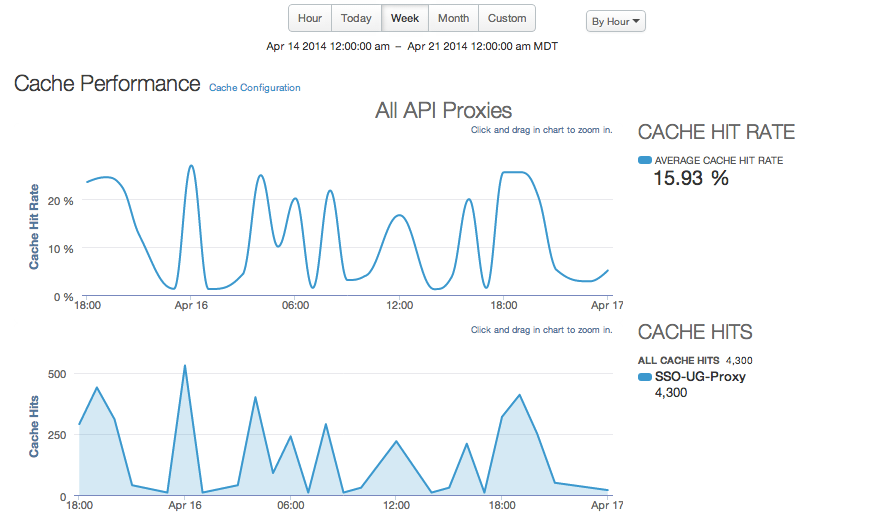

[toc]
The Cache Performance dashboard lets you see at a glance the value of your Apigee Edge cache. The dashboard helps you visualize the benefit of the cache in terms of lower latency and reduced load backend servers.
For information about cache management, see http://docs.apigee.com/node/10170.
The Cache Performance dashboard

| Metric | Description |
| Average cache hit rate | The rate of calls hitting the cache measured against total API traffic. |
| All cache hits | The sum of calls that hit the cache. |
| Average time with cache | The average amount of time for an API call when it hits the cache. |
| Average time without cache | The average amount of time for an API call when it does not hit the cache. |
| Cache improvement | Compares the average time with cache and average time without cache, giving you an idea of the overall effect of the cache on API performance. |
| Cache hits by app | Sum of calls hitting the cache broken down by developer app. |
You can measure cache performance for all API proxies in your organization, or you can select individual ones.
This dashboard uses standard controls, like the date and data aggregation selectors, hovering over graphs for more context, exporting data to CSV, and so on. To learn more, see http://docs.apigee.com/node/15971.